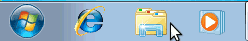
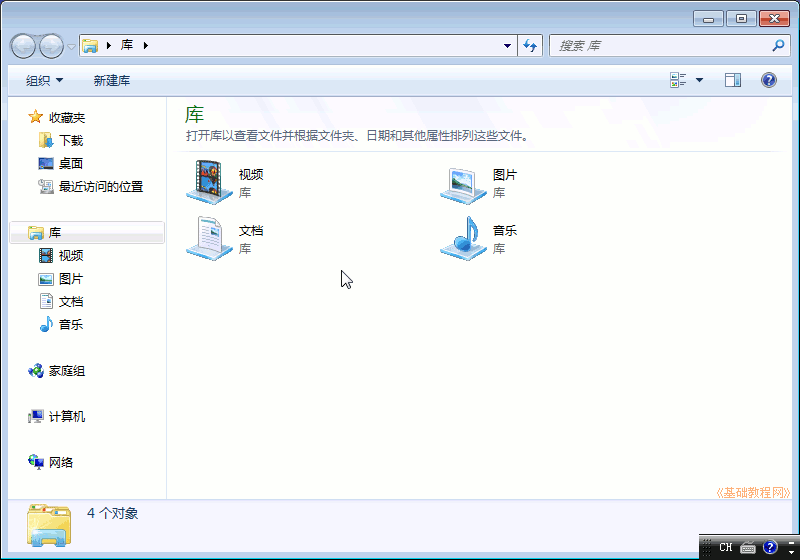
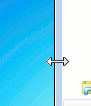
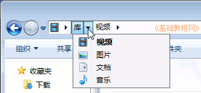
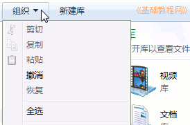
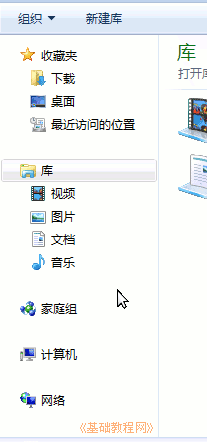
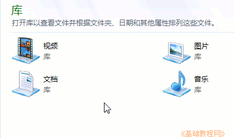
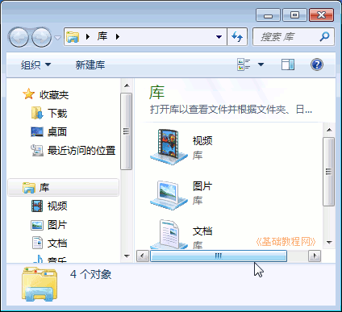

Windows7 基础入门教程
作者：TeliuTe 来源：基础教程网
二、认识窗口 返回目录 下一课Windows 被称作视窗操作系统，它的界面 是由一个个的窗口组成的，下面我们来学习一下窗口的知识；
1、窗口组成
在任务栏左边，找到第三个黄色的文件夹图标，点击打开“库”窗口；

1）边框 每个窗口都有四个边，将鼠标移到边上，指针会变成一个双箭头，这时按住拖动就可以改变窗口的大小；

2）标题栏 窗口的最上边的长条就是标题栏，拖动标题栏可以移动窗口的位置
最右边的三个按钮分别是最小化、最大化/恢复和关闭按钮，点击可以改变窗口大小；
3）地址栏 标题栏下边是地址栏，中间有一个长条文本框，表示现在所在的文件夹位置，点击旁边的黑三角下拉按钮可以切换位置，
在路径名称旁边有一个黑三角转到按钮，点击可以切换到其他位置；

4）工具栏 在地址栏下边有两个标签，第一个是“组织”，点击会显示一个下拉菜单，显示常用的操作命令；

5）导航窗格 在窗口左侧有一个侧栏，里面显示了其他常用的文件夹，点击可以快速切换到其他位置；

6）工作区 窗口中间的空白区域就是工作区，里面存放文件和文件夹，

库里放有视频、图片、文档、音乐四个文件夹，自己还可以新建；
7）滚动条 窗口缩小以后，有时在右侧和底边会出现一个长条，两头是个黑三角箭头，这就是滚动条，

单击黑箭头或者拖动滚动条，窗口下面的内容就会显现出来；
练习：
1、打开“库”文件夹，瞄准标题栏把它拖到右边，再移到中间，最小化窗口、最大化窗口，然后再还原；
2、记住窗口的各个组成部分的名称；
3、打开“库”窗口中的“视频”文件夹，看一下窗口中的内容，单击地址栏上的“后退”按钮返回；
4、看一下地址栏中的内容，确定当前的位置，单击两边的按钮试试；
5、找一个窗口有滚动条的窗口，拖动一下滚动条，再单击上下的黑三角按钮看看有什么不同？
本节学习了 Windows 窗口的基础知识，如果你成功地完成了练习，请继续学习下一课内容；
本教程由86团学校TeliuTe制作|著作权所有
基础教程网：>http://teliute.org/
美丽的校园……
转载和引用本站内容，请保留作者和本站链接。